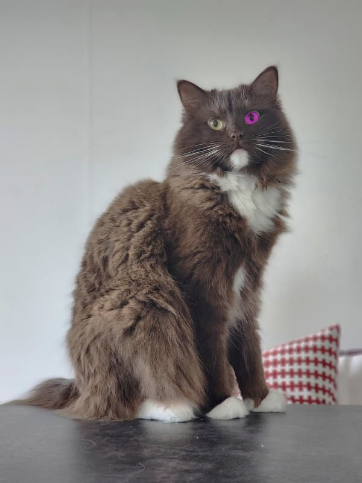
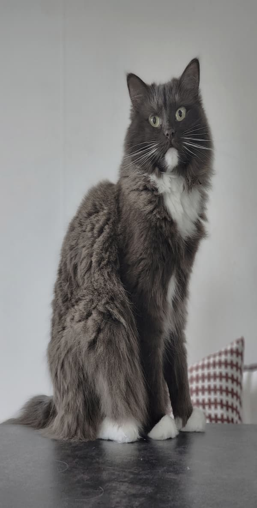
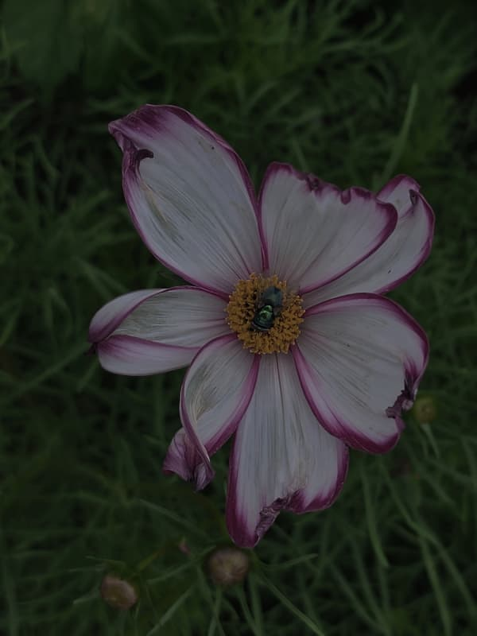
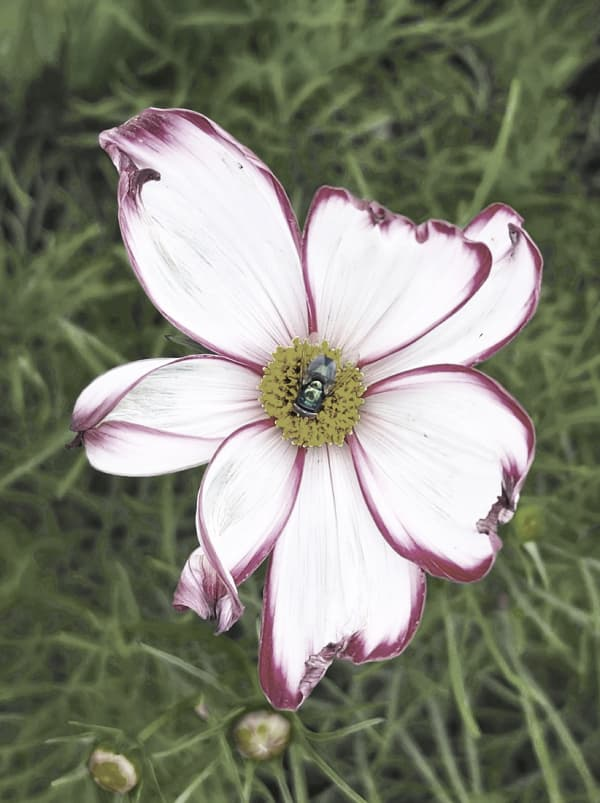
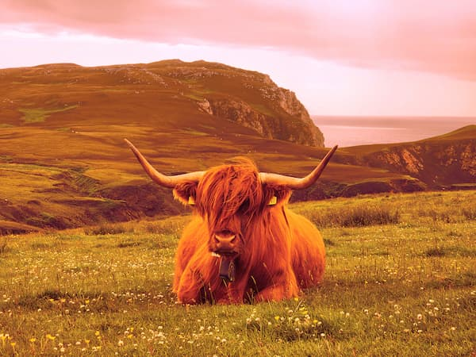
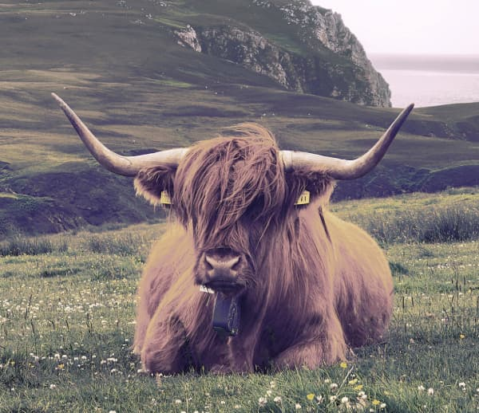

I originalbilden var ljuset kallt och kattens öga var lila. Jag ökade mättnaden och kontrasten samt minskade ljusstyrkan på hela katten för att framhäva detaljer och färger i pälsen. Eftersom bilden i övrigt hade bra ljus och komposition valde jag att framförallt fokusera på ögat. Jag markerade ögat och pupillen med lassoverktyget för att få en jämn kant, och använde därefter kloningsverktyget för att ta färg från det "normala" ögat och applicera på det lila. Resultatet blev en mer naturlig och balanserad blick.


Den ursprungliga bilden upplevdes väldigt mörk och platt, så jag ökade ljusstyrka och kontrast i första steget. Justerade även ljusbalansen för att få fram varmare och klarare färger. Ökade även lyster och exponering. För att tona ned det gröna i bakgrunden så att det skulle matcha resterande bilder justerade jag färgbalansen specifikt för midtones och highlights under fliken "green". Resultatet blev en ljusare och mer harmonisk bild där blomman framträder klart tydligare.


På denna bild fokuserade jag primärt på att korrigera färgbalansen, eftersom originalet drar mycket åt gult och rött. Jag justerade midtones och highlights för att skapa en naturligare ton i hela bilden. Kontrasten och ljusheten ökade jag för att ge bilden mer djup, medan mättnaden sänktes för att undvika överdrivna färger. Jag använde även brush tool för att retuschera bort några blommor framför motivet. Avslutade med att beskära bilden för att kossan skulle få mer fokus i bilden.